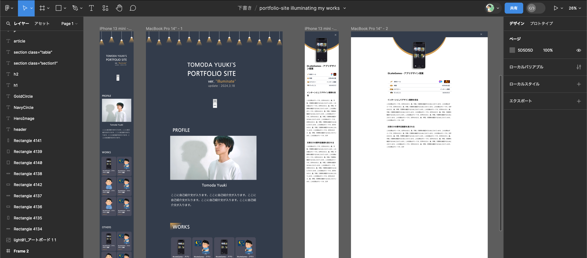

ポートフォリオサイト ver. illuminate

使用ツール


時期
大学４年の冬
カテゴリー
自主制作

行ったこと
WEBデザイン/UI/UX
約１ヶ月の独学で作ったポートフォリオサイト
この記事では、私がHTMLとCSSを全くわからない状態からポートフォリオサイトを作るまでのプロセスをお話しします。
入社する企業でHTMLとCSSの知識が必要になるらしい
大学4年の１月終盤、卒業研究発表が終わり、晴れて最後の春休みが始まりました。春休みにやることといえば、卒業旅行などがあると思いますが、やはり勉学も疎かにしてはいけません。そこで私は入社する企業で必要になるHTML/CSSの知識を身につけることにしました。
とりあえず、Progateを一周しよう！
プログラミング学習サイト「Progate」
まず、「HTML/CSSを学習」と検索しておすすめに出てきた「Progate」という学習サイトを使って学び始めました。HTML/CSSの最初の印象は「結構難しそうだ」というものでした。
コードを書くのがつまらなくなってしまう
プロゲートを始めてから10日ほど経ち、プロゲートの内容はまあまあ理解できたのですが「コード書くのがつまらないなぁ」という気持ちになってしまいました。レゴブロックで例えるなら、説明書通りに作っているだけで創意工夫というものが欠落している感じです。
自身のポートフォリオサイトを作ろう！と思い立つ
ふと、自分のポートフォリオサイトを作ろう！と思い立ちました。今のうちにポートフォリオサイトを作っておけば、何かあった時に自分を他人に知ってもらいやすくなるだろうし、うまく作れなくてもいい勉強になるだろうと思ったからです。
他者分析によってどんなサイトを作るかのイメージを作る
ポートフォリオサイトを作ると決まって最初にやったことは、他者分析です。他の人がどんなポートフォリオサイトを作っているのかを１日かけて分析しました。そして５つほどのサイトをお手本にすることにしました。
Figmaにてデザインのプロトタイプを作る
それでは、実際に自身のポートフォリオサイトを作る過程に入っていきます。まずは、プロトタイピングツールFigmaでサイトのデザインを作りました。
Figmaで作ったサイトのデザイン
グリットレイアウトに出会い、より精密なデザインが可能になる
Figmaで作ったデザインをHTML/CSSに落とし込むためには、どんな技術（コード）で作るかを事前に考えておく必要があります。そこでインスタグラムやYoutubeを見ていたところ「グリットレイアウト」というものに出会いました。
グリットレイアウトで作ったサイトのデザイン
:active や :sticky などを学び、やりたい挙動を可能にしていく
この辺でWEBデザインの面白さがわかってきました。やはりできることが増えて、自己表現に繋がっていくと楽しいですね。「ON/OFFボタンを押したらライトが消える」とか「ライトがPROFILEよりも下に行かないようにする」など特殊な挙動の実装は楽しいものがありました。
サイトのトップのデザインと挙動
あとは、ひたすら作っていくだけ
技術的な部分がクリアになったので、ここからはただただ作っていく作業です。できる日は毎日、朝から昼にかけてパソコンと向き合いながら、サイトのトップを作ったり記事を書いたりしていました。ちゃんとは思えていませんが、サイトを作り始めてから終えるまでにちょうど10日間かかったと思います。
GitHubを使ってネットに公開するのには、友達の力を借りた
ポートフォリオサイトのHTML/CSSが完成し、「よし、ネットに公開するぞ」という段階に入りました。しかし、どうやってネットに公開するのかはよくわかりませんでした。そこで、そのことに精通している友達の力を借りました。